Desktop
Wayland desktop for laptops and workstations.
- ISO image · ~1.5 GB
- Live session + installer
- UEFI · Secure Boot
Choose your edition, verify your image and boot into a system you can trust.
The first milestone of BastiaOS: a minimal, reproducible x86_64 system built with Buildroot, booting with GRUB2 and systemd.

All editions share the same verified, immutable core.
Wayland desktop for laptops and workstations.
Headless, hardened image for servers and VMs.
Minimal appliance image for embedded and edge.
BastiaOS is designed to be light. These are the targets for the Desktop edition.
| Component | Minimum | Recommended |
|---|---|---|
| Processor | x86_64, 2 cores | 4+ cores |
| Memory | 2 GB | 4 GB+ |
| Storage | 16 GB | 32 GB+ SSD |
| Firmware | UEFI | UEFI + TPM 2.0 |
| Graphics | KMS-capable GPU | Mesa-supported GPU |
Every BastiaOS image can be rebuilt from source and verified bit-for-bit.
Any modern Linux host works. On Debian/Ubuntu:
sudo apt install git wget tar make gcc g++ python3 rsync bc cpio unzip file
git clone https://github.com/LeooMatheuss/bastiaos.git cd bastiaos
./scripts/setup-buildroot.sh
The first build downloads and compiles the full toolchain and can take a while.
cd build/buildroot cp ../configs/bastiaos_defconfig .config make -j"$(nproc)"
sudo apt install qemu-system-x86
From build/buildroot, after a successful build:
qemu-system-x86_64 \
-kernel output/images/bzImage \
-drive file=output/images/rootfs.ext2,format=raw \
-append "root=/dev/sda console=ttyS0" \
-nographic \
-m 512MEach release publishes a SHA256SUMS file and its signature next to the images.
wget https://github.com/LeooMatheuss/bastiaos/releases/latest/download/SHA256SUMS wget https://github.com/LeooMatheuss/bastiaos/releases/latest/download/SHA256SUMS.sig
sha256sum --check --ignore-missing SHA256SUMS
Build the same release tag from source and compare hashes — they should match exactly.
sha256sum build/buildroot/output/images/*
BastiaOS gets better with every report. Open an issue or send a pull request on GitHub.